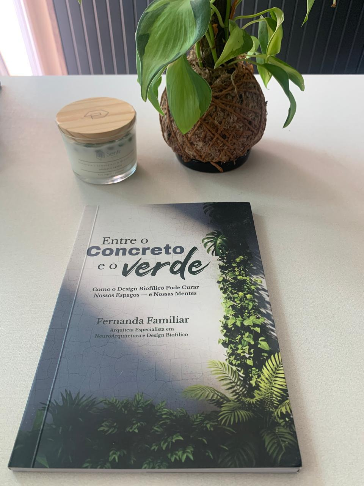

Entre o Concreto e o verde
Como o Design Biofílico Pode Curar Nossos Espaços — e Nossas Mentes
E se o segredo de um espaço melhor estivesse naquilo que nos conecta à natureza?
Não basta um ambiente ser bonito. Ele precisa fazer sentido para quem vive nele.
A luz que entra pela janela, o ar que circula, os materiais que tocamos e a presença do verde influenciam a maneira como experimentamos os espaços.


Não é só sobre plantas. É sobre como vivemos.
Você não precisa transformar sua casa em uma floresta para trazer a natureza para perto. Precisa compreender como ela pode estar presente nos espaços que habitamos.
O design biofílico não é uma tendência de decoração. É uma nova maneira de pensar a relação entre pessoas, natureza e ambientes construídos.
E, depois dessa leitura, talvez você nunca mais olhe para uma janela da mesma maneira.
O livro de perto
O que você vai descobrir neste livro?
-
A ciência por trás da biofilia
Por que temos uma conexão tão profunda com a natureza.
-
O design biofílico na prática
Princípios que vão muito além de colocar plantas nos ambientes.
-
Os elementos que fazem diferença
Luz natural, ventilação, materiais, texturas, sons, formas e experiências sensoriais.
-
Como aplicar esse conhecimento
Ideias para projetos profissionais e para os espaços da sua própria vida.
Com referências, embasamento científico, exemplos práticos e uma escrita leve, inteligente e sem complicação.
Para quem é este livro?
- Arquitetos, designers e estudantes que desejam projetar além da aparência.
- Profissionais que buscam novas perspectivas para seus projetos.
- Quem se interessa por arquitetura, decoração e bem-estar.
- Qualquer pessoa que já sentiu a diferença entre estar cercada de concreto e caminhar entre árvores — e quer entender por que isso nos toca tanto.
Você não precisa ser arquiteto. Basta habitar algum lugar.
Quem escreve sobre isso?
Fernanda Familiar
Arquiteta e urbanista · Neuroarquitetura e Design Biofílico
Fernanda dedica sua trajetória a investigar as relações entre espaços, comportamento humano e experiência.
Neste livro, compartilha conhecimento técnico e científico em uma leitura que convida a repensar a arquitetura, a natureza e a própria maneira de habitar o mundo.
A arquitetura começa muito antes das paredes.
Entre o Concreto e o Verde é um convite a descobrir o que acontece quando a natureza volta a fazer parte da maneira como pensamos e projetamos os espaços.
Quero meu exemplar

Adquira seu exemplar
Entre o Concreto e o Verde
- Formato
- Livro físico e digital
- Páginas
- 76
- Dimensões
- 14,81 × 0,46 × 21,01 cm
- Onde comprar
- Amazon